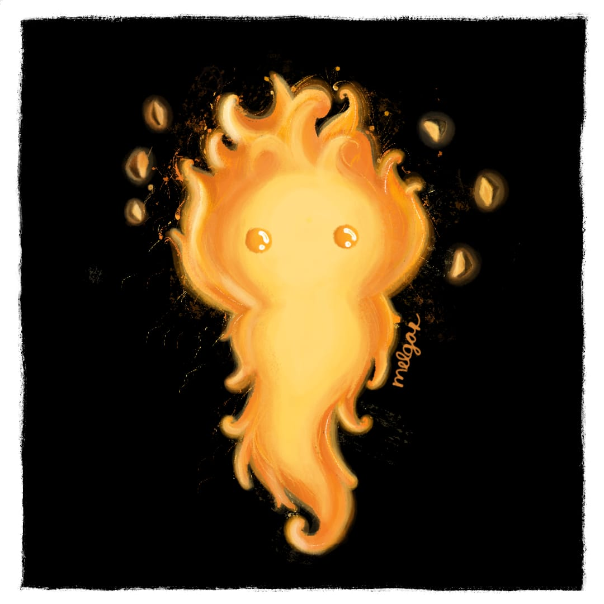
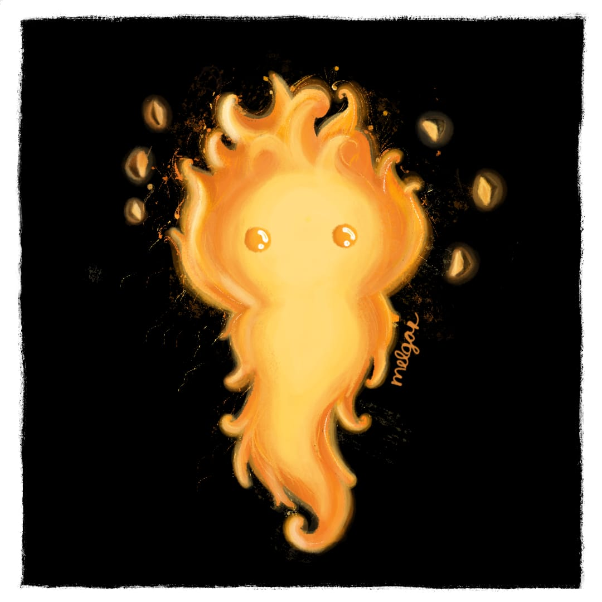

Patitos
Supongo que lo mejor es tener un patito para comenzar, y qué mejor forma que el mejor de todos, el del sticker que tanto me gusta c:, pensé que quizás te gustaría. Al final me quedaste debiendo el dibujo de un patito.
Para continuar, la imagen de tu descripción gráfica, un pollito llorando. Este pollito representa mi vida en muchos aspectos, tú los conocías, creo, pero ahorita este pollito eres tú, como siempre corazón de pollo c: era lindo siempre que mencionabas ese tema.
¿Qué sería una conversación contigo si no hay un sapito de los que tanto te gustan? Sé que hasta cierto punto, te hacen falta los sapitos, a mí me harían falta, supongo que muchas veces solo me gustaría vovlerte a enviar un sapito, y que te enojases conmigo jajaja.
Finalmente, lo mejor de todo, un kirby, sé que no sabes de videojuegos, pero kirby es de mis personajes favoritos :D es super adorable, increíble, si supieras la historia que tiene, jamás te la conté, porque son cosas muy muy muy frikis, pero al final de la última página hay una mini historia divertida c: Recuerda que los cositos de arriba son sub menús, para que los presiones.
Penguins
¿Qué mejor forma de continuar que con Penguins? Creo que ninguna. Sabes al pie de la letra que son mis animales favoritos, son tan adorables, geniales, hay videos de ellos donde son chistosos xd son tan elocuentes, son muy tiernos, supongo me trae un poquito de nostalgia escribir sobre ellos.

Pinturas
Las pinturas tuyas es algo que SIEMPRE me gustaron, no solo porque estaba tratando contigo, siempre lo dije de corazón, y la verdad me habría gustado más ver un poquito de tus dibujos, porque está claro que nunca vi ni la mitad de cosas increíbles que has hecho. Ahorita sólo he puesto 4 dibujos tuyos que me parecen mega mega geniales, hay más, todos me han mega encantado, pero hacer eso sería hablar demás. Al final de cuentas, tú tienes tus dibujos, y es mejor que los mires por tu cuenta y te sientas orgullosa de todo lo que has hecho por ti misma, todos esos logros increíbles c:


 

Lo último

Finalmente, los girasoles, sé que son tus plantas favoritas, algo que quería darte si es que alguna vez te llegaba a ver, pero a raíz de la virtualidad, supongo haré todo esto a mi manera, la manera creativa, aunque sé que de creativo no tengo mucho.
Cada girasol es muy bonito, ahora veo porque te gustan tanto c: supongo que es algo que debo de afrontar, las cosas han sido y nunca habrá una vuelta al pasado, recordar siempre será el peor enemigo de todos nosotros, pero me gusta a veces pensar en lo lindo que fue saber de tu existencia c:

Intenté darte una "sorpresa" a mi forma, quizás no es la mejor, es la primera vez que hago algo así, no sé porqué lo estoy haciendo, quizás porque jamás te enseñé nada de mi vida privada mientras tú a cada rato me enseñabas dibujos tuyos. Sé que todo esto es nada y mañana será recuerdo viejo, pero me alegra haber hecho esto, y como dije antes, felicidades por todas las cosas que lograste, y todo lo que lograrás, sé que serás una excelente diseñadora gráfica, y mientras tú seas feliz, no tengo nada de qué quejarme. Por cierto, abajo está el video de kirby c: